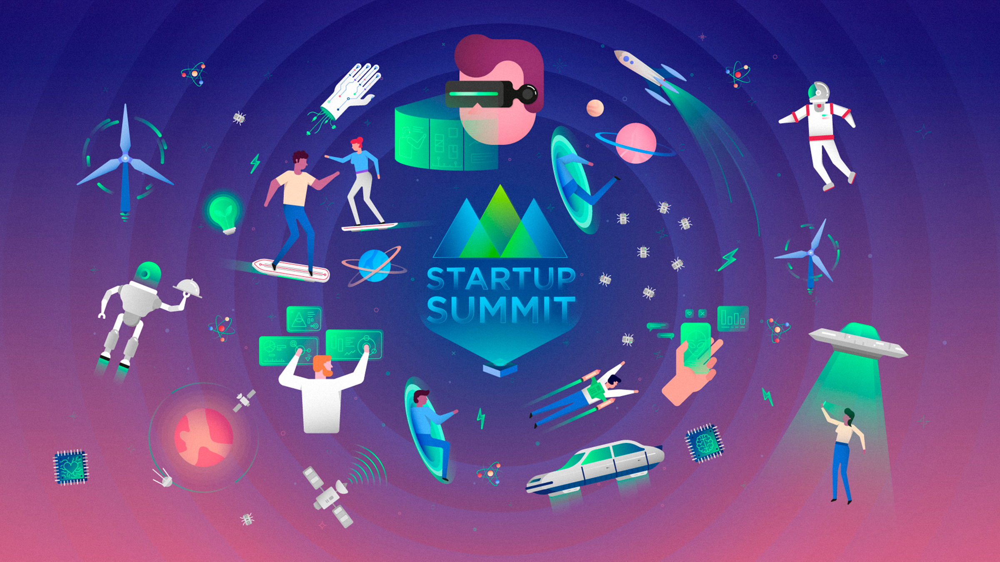
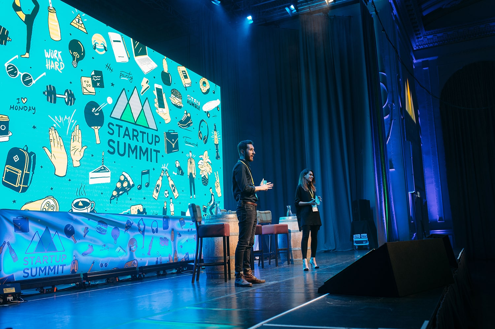
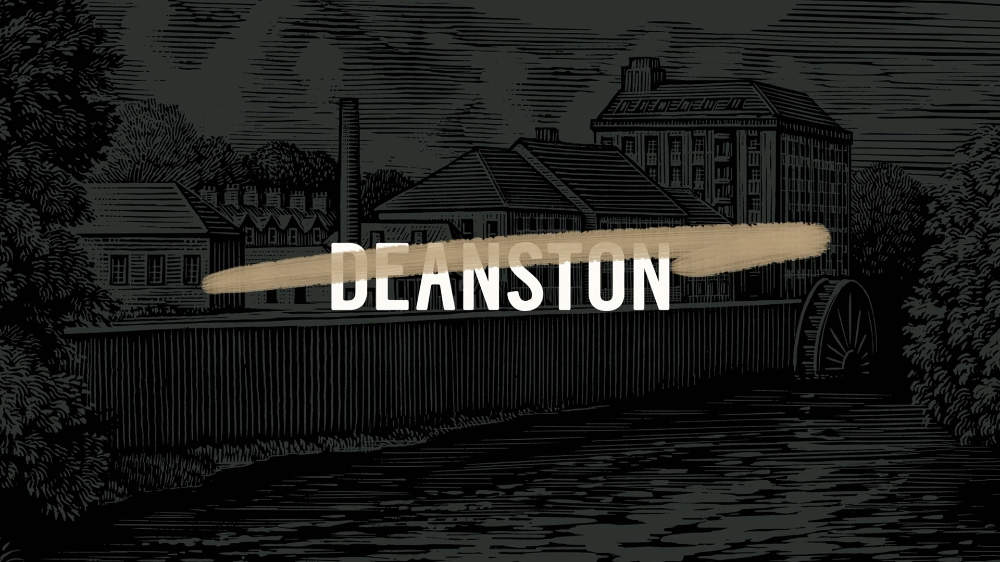
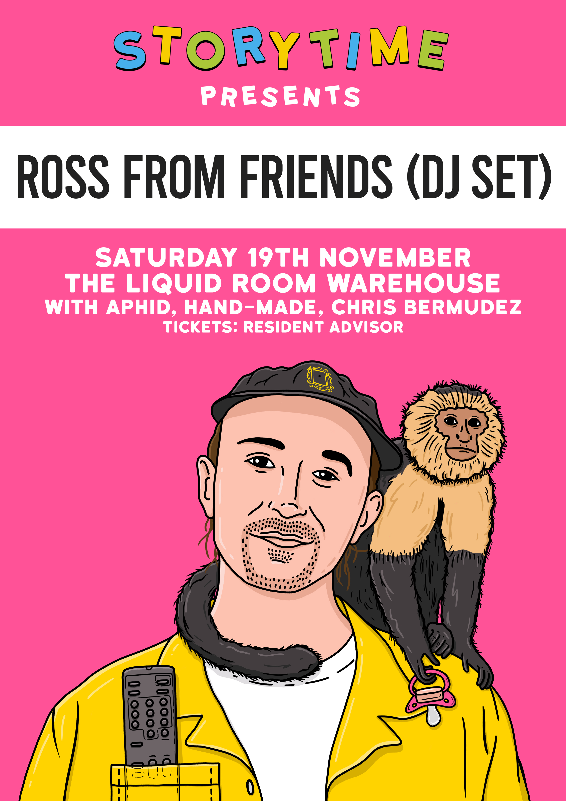

06 — About
Work and experience.
I'm a creative director and designer based in Melbourne, working across brand identity, digital experience, and interactive media. I founded Calumma Design in 2022 as an independent studio built around restraint, craft, and genuine curiosity — the belief that the most enduring work comes from asking better questions, not just producing faster answers.
Before going independent, I spent a decade working across in-house teams and agencies — from global hospitality brands to cultural institutions and early-stage startups. That range shaped how I think: I move comfortably between the strategic and the hands-on, between a brand's reason for existing and the precise weight of a typeface on a page.
Experience
Creative Director & Founder
Founded Calumma as an independent design studio working at the intersection of brand identity, digital experience, and cultural strategy. Led all creative output and client relationships, building a practice around restraint, craft, and genuine curiosity.
Notable clients
Hawthorn FC · Wollongong City · MTC Australia · Common Ground · Studio Pip
Independent Creative Director
Four years of independent practice across brand identity, packaging, editorial design, and interactive experience. Worked directly with founders and marketing teams to bring ambitious ideas to life, without layers of hierarchy.
Notable clients
Aesop · Lonely Planet · Broadsheet Media · Ovolo Hotels · Thank You





Senior Designer, Global Brand
Part of the global brand team responsible for maintaining and evolving the Hard Rock visual identity across 200+ locations worldwide. Led campaigns for hotel openings in Europe, the Middle East, and Asia-Pacific.
Markets covered
Europe · Middle East · Asia-Pacific · USA
Designer
First professional role at a multidisciplinary design consultancy in Melbourne. Worked across brand, print, and digital for cultural institutions, not-for-profits, and technology startups. Where the habits were formed.
Sectors
Arts & culture · Technology · Education · Not-for-profit